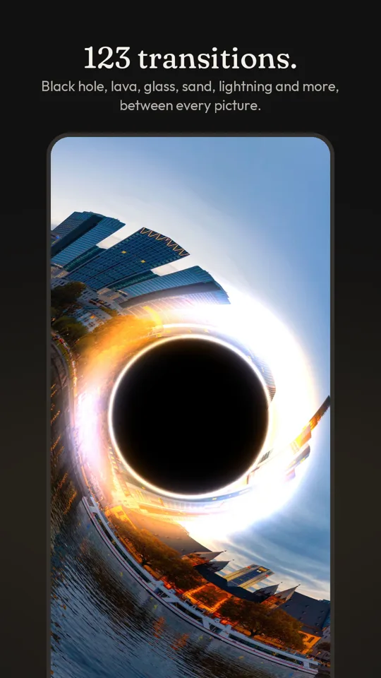
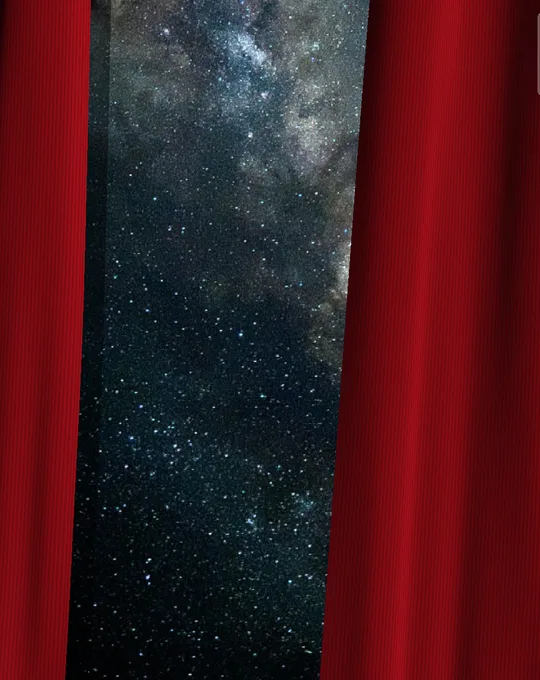
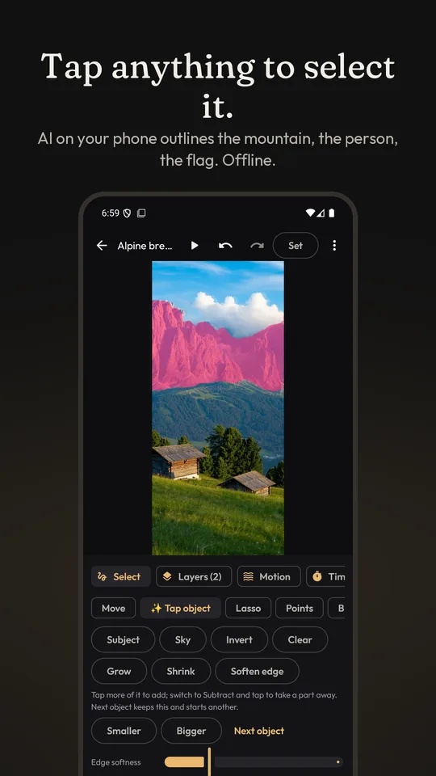

내 동영상과 사진을 안드로이드 라이브 배경화면으로.
휴대폰의 동영상, GIF, 사진을 골라 홈 화면에서 반복 재생해 보세요. 재생목록을 만들면 배경화면이 123가지 전환 효과와 함께 저절로 바뀝니다.
Google Play에서 무료로 받기광고 없음. 계정 없음. 파일은 휴대폰 밖으로 나가지 않습니다.

우리 앱
움직이는 모습 보기
사진 사이를 잇는 123가지 전환 효과




이런 걸 할 수 있어요
동영상 배경화면
휴대폰의 동영상이나 GIF라면 길이에 상관없이 사용할 수 있어요. 설정 전에 반복 재생을 확인하고, 자르고, 시작 지점을 고르세요.
배경화면 자동 변경
동영상, GIF, 사진 재생목록이 저절로 바뀌고, 셔플은 같은 걸 반복하지 않아요.
123가지 전환 효과
물, 용암, 유리, 모래, 블랙홀, 애니메이션, 만화, 레트로 등, 실제 물리 효과로 움직여요.
살아 움직이는 사진
사진 속 사람이나 반려동물이 숨 쉬고, 눈을 깜빡이고, 손가락 쪽으로 몸을 기울여요.
LoopPaper Studio
내 사진에 생명을: 움직이는 하늘, 흐르는 물, 밤에 불이 켜지는 창문, 오라, 애니메이션 효과, 시네마그래프. 3개까지 무료.
천이 된 내 사진
휴대폰을 기울이면 흔들리는 배너, 깃발, 태피스트리, 페넌트, 또는 잠금을 풀면 열리는 극장 커튼. 실크, 벨벳, 캔버스를 고르고 바람은 잔잔함부터 폭풍까지.
피사체 뒤의 시계
플래그십 스타일의 시계를 사진 속 사람 주위나 뒤에 배치해요.
폴더블에 맞춰 제작
메인 화면과 커버 화면에 다른 재생목록, 북 모드와 테이블탑 모드 지원.
배터리 절약
화면이 꺼지면 쉬고, 절전 모드에서는 멈출 수도 있어요.
개인정보 보호
광고 없음, 계정 없음, 추적 없음. 사진은 휴대폰에만 남아요.
LoopPaper Studio: 내 사진에 생명을
어떤 사진이든 하늘이 움직이고, 물이 흐르고, 눈이 내리게 하고, 오라와 빛나는 눈을 더하고, 하늘을 노을이나 별밤으로 바꿔서 라이브 배경화면으로 설정하거나 동영상으로 공유하세요. AI는 휴대폰에서 오프라인으로 작동해요. 3개까지 무료, Pro는 한 번 구매로 구독 없음.



Google Play에서 테스트 중이에요. 테스터 그룹에 가입한 다음: 테스터 되기
Loopy: 홈 화면의 젤리 펫
Loopy는 진짜 말랑한 몸 물리로 움직이는 작은 젤리 친구예요. 찌그러지고, 출렁이고, 앱 아이콘 사이로 비집고 들어가고, 휴대폰을 기울이면 미끄러져요. 하루에 한 번 간식을 주면 재주를 배우고, 간식 받기 게임도 하고, 색상, 모양, 얼굴, 모자로 꾸밀 수 있어요.


Google Play에서 테스트 중이에요. 테스터 그룹에 가입한 다음: 테스터 되기
자주 묻는 질문
안드로이드에서 동영상을 배경화면으로 설정하려면?
LoopPaper를 설치하고 선택을 탭한 뒤, 휴대폰의 동영상이나 GIF를 고르고 미리보기에서 반복 재생을 확인한 다음 배경화면 설정을 탭하세요. 갤러리나 Google 포토에서 동영상의 공유를 탭하고 LoopPaper를 선택해도 돼요.
LoopPaper는 무료인가요?
네. 동영상, GIF, 사진을 라이브 배경화면으로 설정하는 건 무료이며, 광고도 워터마크도 계정도 없어요. LoopPaper Plus는 선택 사항인 1회 구매로, 무제한 재생목록, 123가지 전환 효과 전부, 추가 효과를 사용할 수 있어요. 7일 무료 체험은 체험 시작을 탭할 때만 시작되고 구독으로 바뀌지 않아요.
배경화면이 자동으로 바뀔 수 있나요?
네. 동영상, GIF, 사진으로 재생목록을 만들면 LoopPaper가 전환 효과와 함께 자동으로 바꿔 줘요.
라이브 배경화면은 배터리를 많이 쓰나요?
LoopPaper는 화면이 꺼지면 쉬고 절전 모드에서는 멈출 수도 있어서, 화면을 보고 있을 때만 작동해요.
내 사진이 어딘가에 업로드되나요?
아니요. 파일은 휴대폰에 남아요. LoopPaper는 절대 업로드하지 않으며, 사진에 하는 모든 작업은 휴대폰에서 이뤄져요.